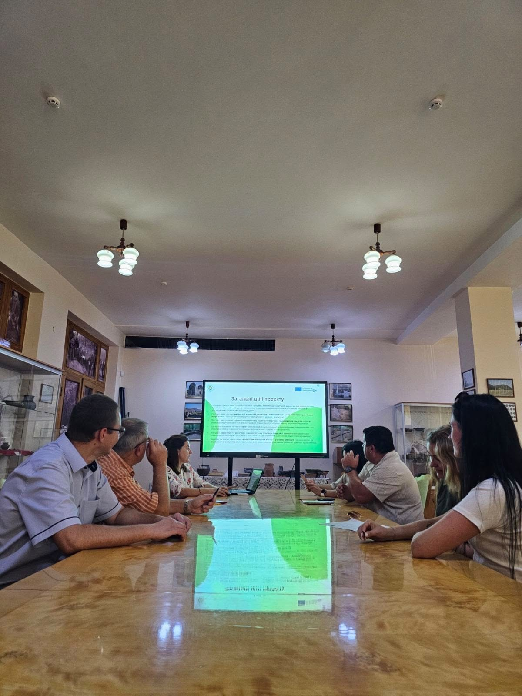
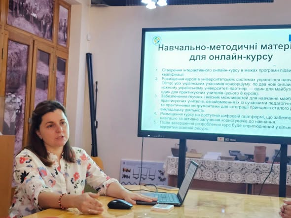

Uzhhorod National University hosted the presentation of the EU Erasmus+ KA2 international project No. 101237551, "Empowering Educators for a Sustainable Future: Enhancing Teacher Training Capacities for the Recovery of Ukraine" (EESF).
On August 25, the project presentation took place at the Archaeological Museum of UzhNU. The initiative aims to advance education for a sustainable future and strengthen teacher training capacities in the context of Ukraine’s post-war recovery.
During the event, participants—academic and teaching staff from various faculties—were introduced to the elective course "Education for Sustainable Development," which is included in the university-wide course catalogue and will be available to Master’s degree students.
The presentation also highlighted opportunities that are already available or will be introduced as the project progresses:
- professional development for faculty on sustainable development topics;
- improvement and updating of curriculum and syllabus designs;
- integration into the learning process of knowledge, skills, and competencies geared toward achieving the Sustainable Development Goals by 2030.
Education for sustainable development is a vital component in training professionals capable of taking responsible action, thinking globally, and contributing to the reconstruction and sustainable development of Ukraine.
Funded by the European Union. Views and opinions expressed are however those of the author(s) only and do not necessarily reflect those of the European Union or the European Education and Culture Executive Agency (EACEA). Neither the European Union nor EACEA can be held responsible for them.
#EESF #ErasmusPlus #EducationForSustainableDevelopment #SustainableDevelopment #TeacherEducation #UkraineRecovery #InternationalCooperation #ESD

